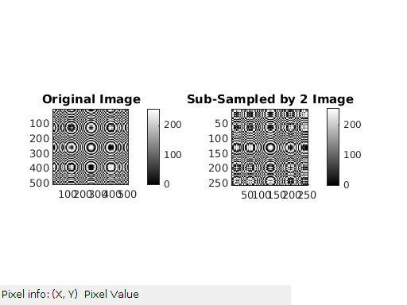
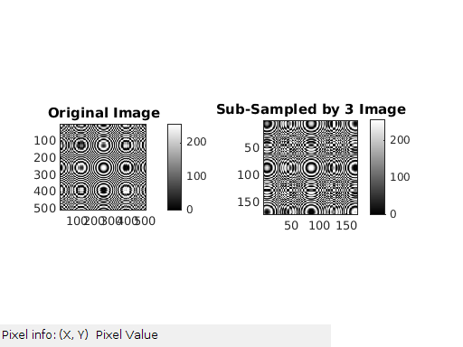
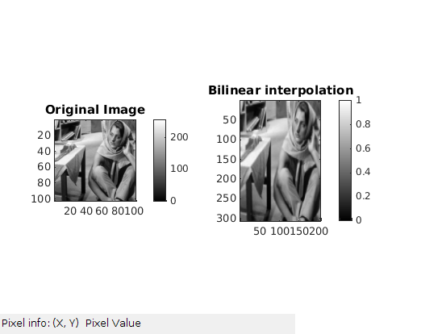
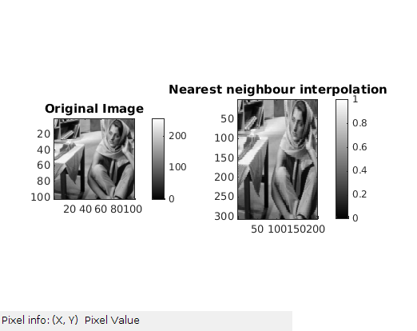

Contents
Called Functions
MyMainScript
% Please use linux machin to run the code %when running mymainScript.m working direcory should be codes folder tic; % Q1-Image Resizing
question 1(a)
To shrink image by factor d.
myShrinkImageByFactorD(2,'circles_concentric'); myShrinkImageByFactorD(3,'circles_concentric'); 
question 1(b)
myBilinearInterpolation('barbaraSmall');
307 205
question 1(c)
myNearestNeighborInterpolation('barbaraSmall');
toc;
307 205 Elapsed time is 6.916163 seconds.